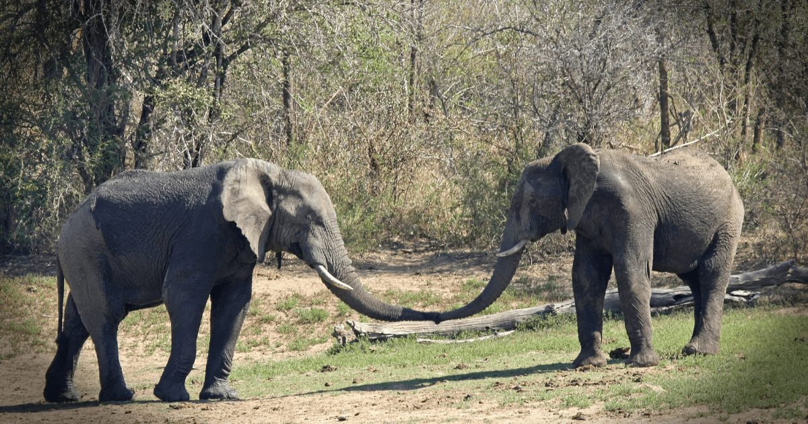

- +254 740 596771
- roamingnomadsafari@gmail.com
This 4-day safari itinerary allows you to explore two of Kenya's iconic wildlife destinations, offering a rich blend of wildlife encounters and stunning landscapes. Roaming Nomads is committed to ensuring your safari experience is both enjoyable and memorable.


.jpg)
.jpg)
.jpg)

.jpg)
✅Roaming Nomads driver and guide will pick you up from your Nairobi hotel or the airport in the morning.
✅Begin your journey to the Maasai Mara Game Reserve, crossing the Great Rift Valley en route.
✅Arrive at Maasai Mara and check in at
your chosen camp or lodge.
✅Enjoy a delicious lunch at your accommodation.
✅Embark on an afternoon game drive in Maasai Mara, known for its exceptional wildlife, including the Big Five.
✅Return to your accommodation for dinner and relaxation.
✅Start your day with an early morning game drive to witness the wildlife at its most active.
✅Return to the camp/lodge for breakfast.
✅Visit a Maasai Village to learn about the traditions and culture of the Maasai people.
Afternoon:✅Lunch at your accommodation.
✅Continue exploring Maasai Mara with an afternoon game drive.
✅Dinner and overnight stay at your chosen camp or lodge.
✅After breakfast, depart from Maasai Mara.
✅Drive to Lake Nakuru National Park, known for its prolific birdlife and rhinos.
✅Check in at your chosen camp or lodge.
✅Enjoy lunch at your accommodation.
✅Embark on a game drive to spot flamingos, lions, leopards, and other wildlife.
✅Dinner and overnight stay within the park.
✅Begin your day with an early morning game drive to capture the wildlife’s morning activities.
✅Return to your accommodation for breakfast.
✅Visit the picturesque Lake Nakuru viewpoint.
Afternoon:✅Have lunch at your camp or lodge.
✅Check out and start your journey back to Nairobi.
✅Arrive in Nairobi and be dropped off at your hotel or the airport, concluding your Maasai Mara and Lake Nakuru safari with Roaming Nomads.
This 4-day safari itinerary allows you to explore two of Kenya’s iconic wildlife destinations, offering a rich blend of wildlife encounters and stunning landscapes. Roaming Nomads is committed to ensuring your safari experience is both enjoyable and memorable.